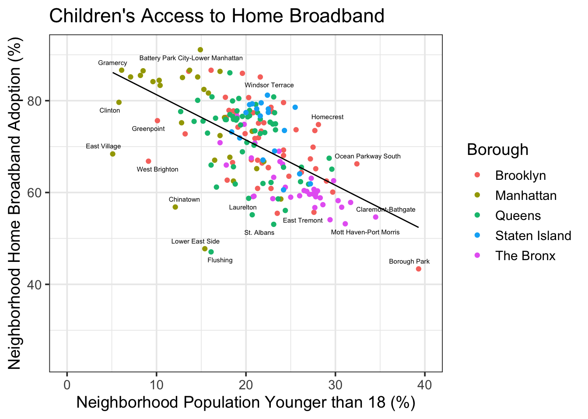

Chapter 10 Trying to Learn Remotely
When the Covid-19 pandemic forced society to a standstill, one of our most significant fears was its effect on children. Worries over the drops in children’s learning and development of social skills loomed large in parents’ thoughts, while schools muddled through teaching their students as best they could. While hard for all students, some faced more difficulties than others. Sadly, neighborhoods with the most children used some of the least reliable Internet in the city.

There was a clear negative correlation between youth population and home broadband adoption. Much of this connection could be attributed to relatively child-free and better-off Manhattan’s high broadband adoption. Following the time-worn connection between poverty, geography, and childbirth rates, New York neighborhoods raising a greater portion of children were the same neighborhoods with the lowest adoption of wired home Internet. For children who might not have yet been old enough to have their own cell phones, this might have meant reliance on a parent’s phone hotspot to attend class or do homework.
If a child had to attend class remotely, then perhaps they might have been able to use a public Wi-Fi network? Unfortunately, during the pandemic, city network access points were more likely to be available in neighborhoods with fewer children. Many of the most youthful neighborhoods had 0 public hotspots at all. For students to learn effectively during Zoom school, many were not able to turn to public Wi-Fi in their neighborhood.
Even excluding the high number of public hotspots in the city’s Manhattan central business districts, public network connections were still more likely to be in neighborhoods with a smaller portion of children. The result was a city Internet infrastructure ill-equipped to accommodate students’ transition to virtual learning.